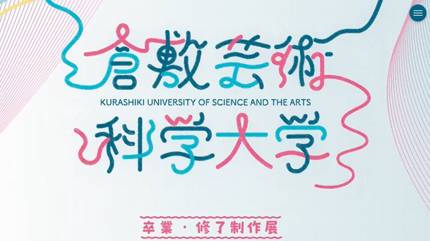
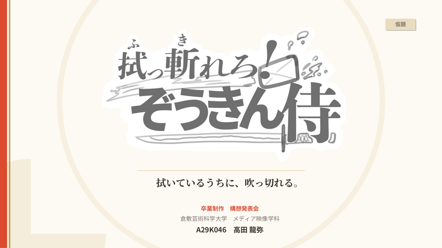
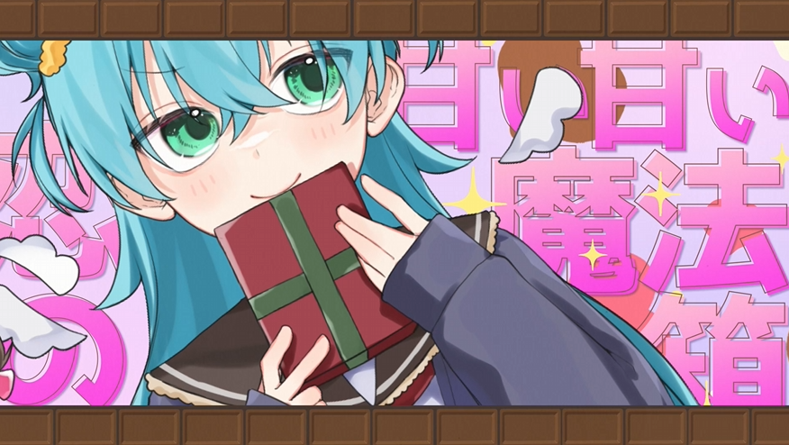
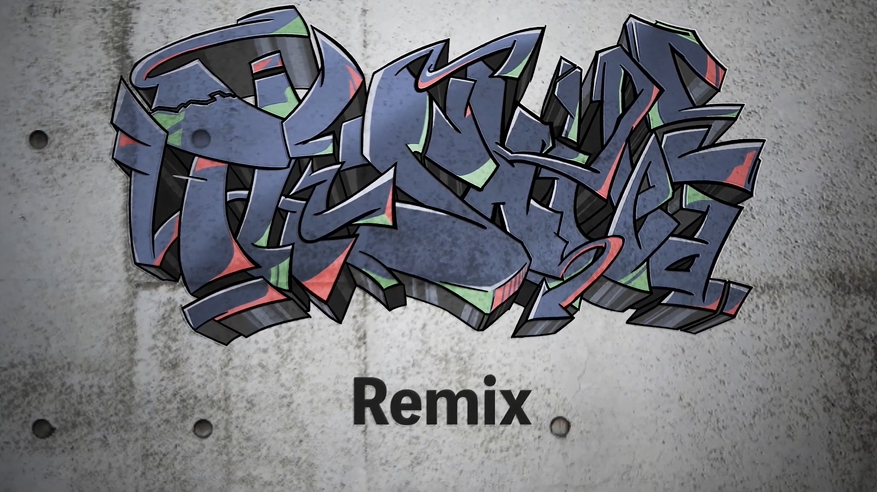
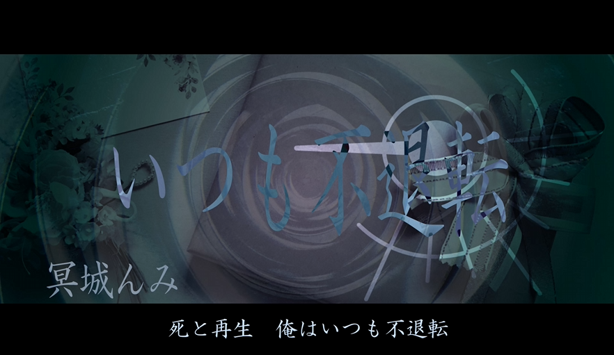
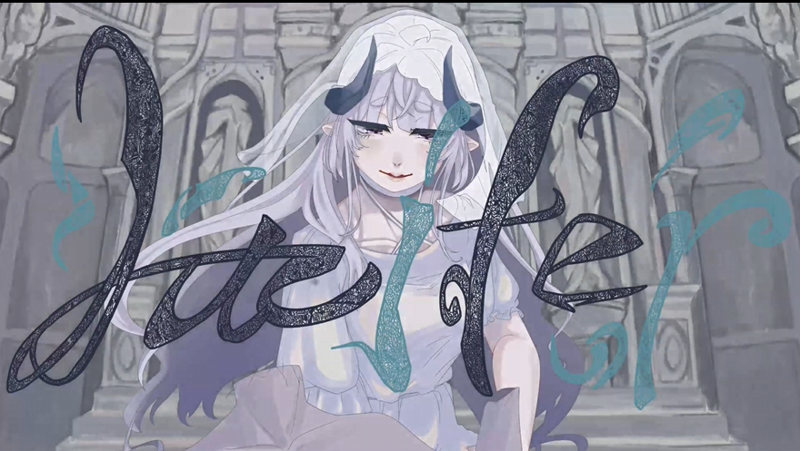

RYUYA TAKADA
高田龍弥/TAKADA RYUYA
倉敷芸術科学大学 メディア映像学科 2027年3月卒業予定
Q. 制作における「譲れない軸」は？
A. 受け手の視点に立つことです。
「自分が何を表現したいか」よりも、「何が一番喜ばれるか」を大切にしています。クライアントさんの言葉の奥にある想いを探り、使う人の心にスッと届く形にする。そのパズルがピタッとはまったときが、この仕事をしていて一番嬉しい瞬間です。
Q. デザイン/映像以外に「武器」はある？
A. 韻に乗せて思いを伝える「ラップ」のスキルです。
過去には録音バトル大会での優勝経験もあり、10曲以上の制作に携わりました。限られた小節数に想いを凝縮する構成力と、心地よいリズム感は、現在のWebデザインや映像制作のタイムライン編集にも活きています。
Q. 今プライベートで熱中していることは？
A. AIと共に、日々の小さな課題を解決することです。
自分の困りごとを解決するためだけの超ニッチなツールや、趣味のトーク動画を、AIのアシストを受けながら作ることに熱中しています。自分ひとりでは出せないスピード感や視点を手に入れて、たくさんのものを作り上げられるのがたまらなく楽しいです。
Q. これからどんな作品を作っていきたい？
A. 誰かの「肩の力が抜ける」ようなコンテンツです。
情報過多で気の休まらない現代だからこそ、私の作ったWebサイトや映像を見た人が、ふと息をつけるような。そんな「体温」のあるクリエイティブを、技術の力で生み出すのが私のミッションです。
WORKS

Web Design / Direction
倉敷芸術科学大学 卒制展サイト
卒業制作展インタビューサイトのプロジェクトリーダーを担当しました。学生30人の先頭に立ち、スケジュール管理やデザインのディレクション、インタビュー記事の編集を行いました。

Rap / Music Video
ラップカバー楽曲制作
nobodyknows+の楽曲ココロオドルのインストに、自作のラップを乗せてカバーしました。また、MVも制作しました。

MV
CHOCOLATE BOX カバーMV
苦手意識のある可愛い系のMVに挑戦しました。可愛く見せるレイアウトや、リリックのタイミングにこだわりました。

MV / Graffiti
The Skilled ラップカバー制作
餓鬼レンジャーの楽曲The Skilledに、自作のラップを乗せてカバーしました。MV、グラフィティアート、各キャラのロゴマークも制作し統一感のある画作りを目指しました。

Web App
フリップ大喜利サイト
お題に対してフリップで回答する大喜利を、Web上で楽しめるようにしたアプリケーションです。直感的な操作と、回答がめくれるアニメーションが特徴です。

MV / Rap
The Gift ラップカバー制作
Ginryu氏の楽曲The Giftに、自作のラップを乗せてカバーしました。6人のMCのリリックを深い意味まで汲み取り、分かりやすく伝わるMVづくりを心掛けました。

Card Game
カードゲーム「毒盛御膳」
騙し合いをテーマにしたカードゲームをグループで作りました。私はルールデザイン、カード表面デザイン、カードイラスト(筑前煮、団子、おにぎり)を担当しました。

MV
ルシファー カバーMV
¿?氏の楽曲ルシファーのMVを制作しました。タイトルロゴ、背景も手描きし、キャラクターイラストとの馴染み方を工夫しました。